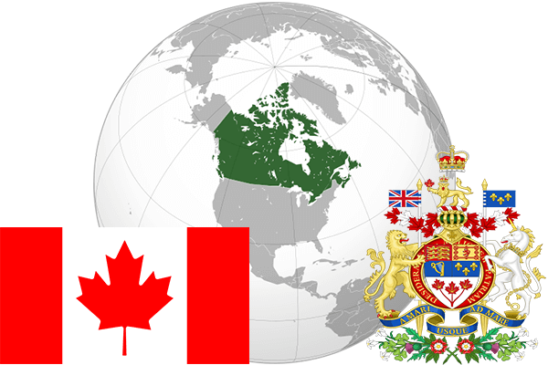

To`liq nomi: Kanada
Region: Shimoliy Amerika
Qonunchilik shakli: Konstitutsion Monarxiya
Mustaqillik kuni: 17 aprel 1982 yil (Birlashgan Qirollikdan)
Poytaxt: Ottava
Maydoni: 9 984 670 km² (dunyoda 2 -o`rinda )
Chegaradosh davlatlari: AQSh
Aholisi: 36 048 521 (dunyoda 37-o`rinda, 2016 -yil roʻyxat)
Aholi zichligi: 3,41 /km²
Aholining o`rtacha yoshi: 80,5 yil ( 83,9 ayollar, 77,0 erkaklar)
Rasmiy tili: fransuz va ingliz tili
Dini: 54,2% katolik, 42% prosestant, 3% pravoslav Ko`pchilik aholi sikxizm va buddizm diniga ham e`tiqod qiladi. 3,4 mln kishi ateist
Pul birligi: Kanada dollari
Telefon prefiksi: +1
Internet domen: .ca
Xalqaro tashkilotlarga a`zoligi: BMT (1945 –yildan), Osiyo-Tinch okeani iqtisodiy hamkorlik tashkiloti, Katta yettilik
Dengiz va okeanlarga chiqishi: Tinch,Atlantika, Shimoliy muz okeanlari.
YIM: Butun: $ 1,518 trln (2013 - yil roʻyxati)
Yirik shaharlari: Toronto, Monreal, Kalgari, Ottava, Edmonton, Mississoga